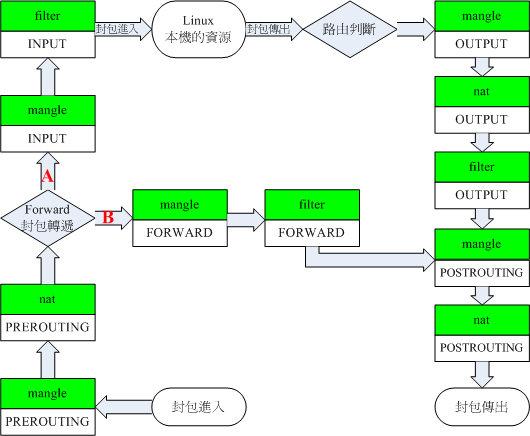

iptables 使用教程
ipatbles 是 Linux 下的网络防火墙规则管理/修改工具，通过控制 Linux 内核 netfilter 模块，来管理网络数据包的处理和转发。用来识别路由表中特定的流量然后执行设定的规则。只用于处理 IPv4 数据包；而对于 IPv6 数据包，则使用类似的 ip6tables 命令。
基本概念
netfilter 模型如下：

结构：
- Tables 路由表：用来区分不同类型的数据包，如 filter，nat，mangle，每个表包含几个路由链
- Chain 路由链：流量的类型，如 INPUT ，FORWARD ，OUTPUT ，每种类型流量可以设置不同规则
- Rule 规则：用来匹配特定类型的流量，如匹配来自 192.168.1.230 的流量
- Target 目标：用来处理匹配到的流量，如 ACCEPT, DROP, QUEUE.
- Policy 策略：是默认的处理动作，用来处理没有匹配到的流量，如 ACCEPT or DROP.
iptables、ip6tables等都使用Xtables框架。存在“表（tables）”、“链（chain）”和“规则（rules）”三个层面。
每个“表”指的是不同类型的数据包处理流程，如filter表表示进行数据包过滤，而nat表针对连接进行地址转换操作。每个表中又可以存在多个“链”，系统按照预订的规则将数据包通过某个内建链，例如将从本机发出的数据通过OUTPUT链。在“链”中可以存在若干“规则”，这些规则会被逐一进行匹配，如果匹配，可以执行相应的动作，如修改数据包，或者跳转。跳转可以直接接受该数据包或拒绝该数据包，也可以跳转到其他链继续进行匹配，或者从当前链返回调用者链。当链中所有规则都执行完仍然没有跳转时，将根据该链的默认策略（“policy”）执行对应动作；如果也没有默认动作，则是返回调用者链。
假设使用路由器作为网关(即我们平时的上网方式)，那么局域网设备通过路由器访问互联网的流量方向：
PREROUTING链->FORWARD链->POSTINGROUTING链
局域网设备访问路由器的流量(如登陆路由器 web 管理界面/ssh 连接路由器/访问路由器的 dns 服务器等)方向：
PREROUTING链->INPUT链->网关本机
路由器访问互联网的流量方向：
网关本机->OUTPUT链->POSTINGROUTING链
内建的路由表：
- filter: 是默认的表，如果不指明表则使用此表。其通常用于过滤数据包。It includes chains like INPUT, OUTPUT and FORWARD.
- nat : 用于地址转换操作。It includes PREROUTING and POSTROUTING chains.
- mangle : 用于修改或标记数据包。
- raw : 用于处理异常。Built-in chains are PREROUTING and OUTPUT.
- security : Used for Mandatory Access Control
内建的路由链：
- INPUT :输入链。发往本机的数据包通过此链
- FORWARD :转发链。本机转发的数据包通过此链
- OUTPUT :输出链。从本机发出的数据包通过此链
- PREROUTING :路由前链，在处理路由规则前通过此链，通常用于目的地址转换（DNAT）
- POSTROUTING :路由后链，完成路由规则后通过此链，通常用于源地址转换（SNAT）
Note: 用户可以创建自定义路由链
目标：
- RETURN 允许并结束在 chains 里继续匹配
- ACCEPT 允许但依然要在其他 chains 里继续进行匹配
- REJECT 拒绝
- DROP 丢弃
- REDIRECT 重定向。只适用于 NAT 路由表的 PREROUTING 和 OUTPUT 路由链
- MARK 只适用于 mangle 路由表。用来给特定流量做标记。
root@OpenWrt:~# iptables -h
iptables v1.8.3
Usage: iptables -[ACD] chain rule-specification [options]
iptables -I chain [rulenum] rule-specification [options]
iptables -R chain rulenum rule-specification [options]
iptables -D chain rulenum [options]
iptables -[LS] [chain [rulenum]] [options]
iptables -[FZ] [chain] [options]
iptables -[NX] chain
iptables -E old-chain-name new-chain-name
iptables -P chain target [options]
iptables -h (print this help information)
Commands:
Either long or short options are allowed.
--append -A chain Append to chain
--check -C chain Check for the existence of a rule
--delete -D chain Delete matching rule from chain
--delete -D chain rulenum
Delete rule rulenum (1 = first) from chain
--insert -I chain [rulenum]
Insert in chain as rulenum (default 1=first)
--replace -R chain rulenum
Replace rule rulenum (1 = first) in chain
--list -L [chain [rulenum]]
List the rules in a chain or all chains
--list-rules -S [chain [rulenum]]
Print the rules in a chain or all chains
--flush -F [chain] Delete all rules in chain or all chains
--zero -Z [chain [rulenum]]
Zero counters in chain or all chains
--new -N chain Create a new user-defined chain
--delete-chain
-X [chain] Delete a user-defined chain
--policy -P chain target
Change policy on chain to target
--rename-chain
-E old-chain new-chain
Change chain name, (moving any references)
Options:
--ipv4 -4 Nothing (line is ignored by ip6tables-restore)
--ipv6 -6 Error (line is ignored by iptables-restore)
[!] --protocol -p proto protocol: by number or name, eg. `tcp'
[!] --source -s address[/mask][...]
source specification
[!] --destination -d address[/mask][...]
destination specification
[!] --in-interface -i input name[+]
network interface name ([+] for wildcard)
--jump -j target
target for rule (may load target extension)
--goto -g chain
jump to chain with no return
--match -m match
extended match (may load extension)
--numeric -n numeric output of addresses and ports
[!] --out-interface -o output name[+]
network interface name ([+] for wildcard)
--table -t table table to manipulate (default: `filter')
--verbose -v verbose mode
--wait -w [seconds] maximum wait to acquire xtables lock before give up
--wait-interval -W [usecs] wait time to try to acquire xtables lock
default is 1 second
--line-numbers print line numbers when listing
--exact -x expand numbers (display exact values)
[!] --fragment -f match second or further fragments only
--modprobe=<command> try to insert modules using this command
--set-counters PKTS BYTES set the counter during insert/append
[!] --version -V print package version.语法结构：
iptables -t [TABLE] [-A/-C/-D...] [CHAIN] rule -j Target
路由链操作
-A 链添加规则
-A 在链表后添加规则和动作，新加的规则排在表的最后。
允许所有发往本机的流量：
iptables -t filter -A INPUT -j ACCEPT
-I 插入规则
-I 指令添加规则并可指定新规则在链表的位置，不指定排序数字的话默认插入的规则放置到路由链第一条。
新建规则并作为 INPUT 路由链第一条规则：
iptables -t filter -I INPUT -j ACCEPT
新建规则并作为 INPUT 路由链第二条规则：
iptables -t filter -I INPUT 2 -j ACCEPT
由于链表的规则是顺序读取的，所以将规则放在前面有时候会确保规则的正确执行，使用 -I 参数比较合适。
-D 链删除规则
删除设定的发往本机的编号为 2 的规则：
iptables -t filter -D INPUT 2
-C 链检查规则是否存在
检查是否有丢弃来自 192.168.1.123 的流量的规则：
iptables -t filter -C INPUT -s 192.168.1.123 -j DROP
-L 路由规则列表
列出当前设定的所有规则并按顺序排序：
iptables -L -n
列出特定路由表的规则：
iptbales -t [TABLE] -L
列出特定路由表的某条链的规则：
iptbales -t [TABLE] -L INPUT
举例说明
分别使用 -A -I 建立规则，然后 -L 查看规则，-D 删除规则：
$ iptables -I INPUT -s 192.168.1.101 -j ACCEPT
$ iptables -A INPUT -s 192.168.1.102 -j ACCEPT
$ iptables -I INPUT -s 192.168.1.103 -j ACCEPT
$ iptables -I INPUT 2 -s 192.168.1.104 -j ACCEPT
$ iptables -L INPUT
Chain INPUT (policy ACCEPT)
target prot opt source destination
ACCEPT all -- 192.168.1.103 anywhere
ACCEPT all -- 192.168.1.104 anywhere
ACCEPT all -- 192.168.1.101 anywhere
ACCEPT all -- 192.168.1.102 anywhere
$ iptables -D INPUT 2
$ iptables -L INPUT
Chain INPUT (policy ACCEPT)
target prot opt source destination
ACCEPT all -- 192.168.1.103 anywhere
ACCEPT all -- 192.168.1.101 anywhere
ACCEPT all -- 192.168.1.102 anywhere规则匹配
-p 匹配特定协议的流量
可能的流量类型: tcp, udp, icmp, ssh etc.
屏蔽对本机的 ping 请求：
iptables -t filter -A INPUT -p icmp -j DROP
丢弃发往本机的 udp 流量：
iptables -t filter -A INPUT -p udp -j DROP
--dport 匹配特定端口
丢弃访问本机 1080 端口的 tcp 流量：(默认是 filter 路由表)
iptables -A INPUT -p tcp --dport 1080 -j DROP
-s 匹配源地址流量
接收来自 192.168.1.230 发往本机的流量：
iptables -t filter -A INPUT -s 192.168.1.230 -j ACCEPT
-d 目标地址的流量
丢弃发往 192.168.1.123 的流量：
iptables -t filter -A OUTPUT -d 192.168.1.123 -j DROP
-i 匹配特定网络入口的流量：
丢弃所有来自 wlan0 无线网口的流量：
iptables -t filter -A INPUT -i wlan0 -j DROP
-o 匹配特定网络出口的流量：
丢弃所有发往 eth0 网口的流量：
iptables -t filter -A OUTPUT -i eth0 -j DROP
允许 loopback 本地访问
允许来自本地的访问(127.0.0.1) 非常重要，应该保证为打开状态：(lo 表示本机网口-interface)
iptables -A INPUT -i lo -j ACCEPT
iptables -A OUTPUT -o lo -j ACCEPT
规则动作
-j 规则匹配后的动作
丢弃所有转发链流量：
iptables -t filter -A FORWARD -j DROP
-m 匹配参数的使用
-m multiport 同时处理多端口
允许访问本机的多个端口的 tcp 流量：(默认是 filter 路由表)
iptables -A INPUT -p tcp -m multiport --dports 22,80,443 -j ACCEPT
-m mac 匹配特定 mac 地址
丢弃某个 mac 地址对本地的访问：
iptables -A INPUT -m mac --mac-source 00:00:00:00:00:00 -j DROP
路由转发
将特定的流量转发到另一个地方，需要用到 PREROUTING 路由表来预处理流量。
将来自 eth0 网口的访问本机 25 端口的 tcp 流量转发到 2525 端口：
iptables -t nat -A PREROUTING -i eth0 -p tcp --dport 25 -j REDIRECT --to-port 2525
新建路由链
通过新建自定义路由链，可以放入自定义的规则到里面。自定义规则并不能被直接使用，需要使用系统内置的 chains 然后 jump 到自定义 chain。
语法：
iptables -t [TABLE] -N [CHAIN]
在 NAT 路由表下新建路由链 custom-chain：
iptables -t nat -N custom-chain
查看新建的路由链：
iptables -L custom-chain
将流量转到自定义路由链：
iptables -A INPUT -p tcp -j custom-chain
删除路由链
语法：
iptables -t [TABLE] -X [CHAIN]
示例：
iptables -t nat -X custom-chain
注意，如果路由链里定义的有 rule 规则，则直接执行以上命令会报错：iptables: Directory not empty.，需要先删除链中所有的规则，在执行删除命令：
iptables -t nat -F custom-chain
iptables -t nat -X custom-chain标记流量
MARK 目标用来给流量做标记，方便识别及处理。只适用于 mangle 路由表：
iptables -t mangle -A PREROUTING -p udp --dport 53 -j MARK --set-mark 1
常用命令
清除设置的规则，默认为 filter 路由表：
iptables -t [TABLE] -F
保存规则：
iptables-save > /path/to/file
恢复规则：
iptables-restore < /path/to/file
直接使用iptables命令修改防火墙配置的时候，防火墙规则只是保存在内存中，系统重启后就会失效。如需保存规则，需要使用以上命令保存和恢复。
参考文章
iptables command in Linux with Examples
25 Useful IPtable Firewall Rules Every Linux Administrator Should Know
iptables wikipedia
https://gist.github.com/mcastelino/c38e71eb0809d1427a6650d843c42ac2
标签：无